Producción audiovisual
Concepto, guion, producción, grabación y postproducción para videos de marca, institucionales, campañas y piezas digitales.

Servicios
Producción audiovisual, contenido y estrategia digital conectados desde el inicio para que cada pieza tenga un propósito.
01 / Producción
Concepto, guion, producción, grabación y postproducción para videos de marca, institucionales, campañas y piezas digitales.
Reels, microcontenido, carruseles y publicaciones gráficas con una lógica visual y narrativa consistente.
Grabación y edición de episodios, más piezas cortas para reutilizar el contenido en distintas plataformas.
Retratos profesionales, equipo, instalaciones, consultorios y espacios para fortalecer la percepción de marca.
Video resumen con mejores momentos y fotografía profesional para eventos, lanzamientos y activaciones.
Planificación de contenido, manejo de redes, community management y apoyo en pauta publicitaria.
02 / Proceso
Objetivo, audiencia, tono y qué necesita lograr la pieza.
Definimos el mensaje, estructura, formatos y plan de producción.
Grabación de video, fotografía o podcast con una dirección visual clara.
Edición, diseño, sonido y adaptación para cada canal.
Entregables listos y, cuando aplica, acompañamiento de estrategia digital.
03 / Showreel
Este bloque está preparado para insertar un reel corto o una selección de proyectos reales cuando los tengas listos.
Siguiente paso